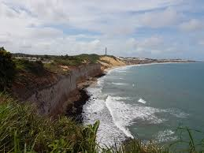

O Rio Grande do Norte é famoso por suas dunas e praias, como as de Natal e Pipa. O estado tem uma economia voltada para o turismo, agricultura e indústria, com destaque para a produção de sal e energia eólica. Sua capital, Natal, é um dos destinos mais procurados do Nordeste e é conhecida pela famosa Fortaleza dos Reis Magos.
